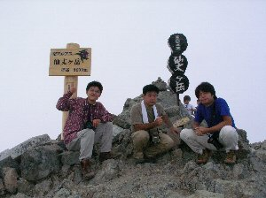
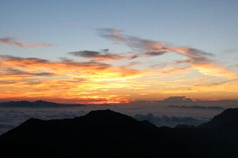
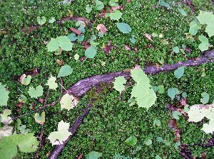

仙丈ケ岳 | 2005年9月 |
|---|---|
| 昨年は北岳・間ノ岳に二人で登った我々BIPだが、今年は3名（私、MAX氏、M田氏）で丈ケ岳に赴きました。（BIPとは「しふとべる」とは別グループです） 仙丈ケ岳は南アルプスの一部で、北岳の北西に位置し、山梨と長野県の県境で標高3033ｍ有ります。日本百名山の一つでもあり、北沢峠（標高1900ｍ付近）からスタートすれば、約4.5時間で到達出来る、初心者でも登山可能な山です。 多くの人が日帰りで登ってしまう山を、我々は山頂付近の「仙丈小屋」に宿泊することにしました。やっぱり朝日を山の上で見たかったのと、仙丈山頂付近はテント禁止なので、今回は小屋泊まりです。テントを持っていかなくて良いので、今回は楽チンです。 | |
 登山開始地点 |  苔生した倒木（結構好きな写真♪） |
| 去年までは広河原まで車で行けたのですが、今年は規制がかかり奈良田からバスで行くことになりました。奈良田→広河原（1,000円）、広河原→北沢峠（荷物量込み750円） 土曜の朝9時半に北沢峠に到着、10時出発です。天気は薄曇といったところでしょうか。行きのルートは西側の大平山荘前から馬ノ背へ抜けるコースです。途中まで横に沢が流れていて、いつでも水が飲める最高なコースです。（どことなく北岳に似てますね）沢の水は澄んでいて「これぞ南アルプス天然水！」と言いたくなる清流です。所々に沢に流れ込む小さな滝も見ものですね。 | |
 沢を渡る |  真ん中に見える小さい小屋が「仙丈小屋」 |
| 馬ノ背ヒュッテを通り過ぎ、尾根まで出てしまうと、小屋はもう間近になり、以外に早く着くのでびっくり。「あれ、登りはもう終了？」と言う感じです。（そう言いながらも、久しぶりの登山で足はガクガク！ もう登らなくて良いんだ〜〜と言う気持ちです） 途中写真を撮ったり、昼飯を食べたりで、小屋到着は午後3時前。早く着いてもなんなんで、小屋手前の尾根で、わざわざ休憩したりして。小屋に荷物を置いたら、仙丈ケ岳登頂です。この頃には山全体を白い雲が覆っている感じで、雨は降りそうに無いけど視界は悪かったです。小屋から30分もしないうちに、仙丈ケ岳山頂、3033ｍです。尾根伝いの景色は見えるけど、近くに見えるはずの北岳が見えません。仕方なく小屋に帰り、夕食の準備をします。 仙丈小屋は、鉄骨三階建てで、屋根に太陽電池、広場に風力発電が沢山付いた、綺麗な小屋でした。こんな山の上なのに、近くに沢が流れ、水には困らない様子。素泊まり3500円、寝具＋1000円、一泊二食付きで6500円と値段も高くありません。我々は飯ぐらい自分たちで。と思っていたので、寝具だけ借りました。（MAX氏は寝袋持参） 因みに私の夕食は、レトルトご飯に、レトルトのマーボー豆腐。このマーボー豆腐はちゃんと豆腐が初めから入っているやつです。それと季節を考慮し「キリン秋味」とチーズ。これだけ小屋の設備が良いなら、みんなで鍋でも良かったのですがね。水は沢山使えるし。 | |
|  天気が悪い中登頂 |  夜が明ける頃。この時間好きです。 |
| 山小屋の夜は早い。夕方5時前には夕食。6時に布団をひき、7時半か8時には消灯。私も6時半過ぎに寝たらしく、8時過ぎにふと目を覚ましたときには、既に真っ暗でした。ココの小屋は利用客が少ないせいか、一人一つの布団を占有出来ました。 夜中に大雨の音で、ちょいと目が覚め、雷まで鳴っている事に気づく。明日の朝が心配・・・ 朝、と言っても4時過ぎに起きて我々は朝食の準備を始めました。他に皆さんは寝ています。炊事場が有るので迷惑は掛けない所が良いですね。外に出ると、星が綺麗に出ていました。先程の雨はどうなったのか？ 既に冬の星座オリオンが出ています。東の空が明るくなってきました。本日の日の出は約5時03分。小屋からは尾根が邪魔をして見えないので、朝食を急いで食べて、東側の尾根まで行きます。およそ15分。 空は晴れ渡っていて、濃厚なブルー色。今日は北岳、間ノ岳、富士山、鳳凰三山、甲斐駒ケ岳、八ヶ岳、遠くに金峰山まで見て取れます。その眼下に広がる雲海。遥か遠くの東京の空まで見えている様でした。 | |
|  朝焼け |  雲海が見えました |
| こんな風景を眺めていると、高い山に来たんだね〜と言う気がします。毎回この感動を、懸命に写真に収めようとするのですが、360°一杯に広がる眼下の景色は広く、微妙な濃淡と強烈な太陽の光で、中々四角い写真の中に写し取ることが出来ません。やはり登ってみて、自分の目で見た時に、分かる感動かも知れませんね。その場に居る自分に感動です。 さて、帰りのバスが北沢峠AM9：45発なので（その後も有るのですが、つながりが悪く、奈良田到着が夕方の5時近くになってしまうので）日の出撮影後直ぐに出発します。 帰りは小仙丈ケ岳を通って行くコースです。小仙丈まで来て写真を撮っていると、後ろから来たグループに「あんたら三脚忘れてない？」と教えて頂き、MAXの三脚が朝日を撮った場所に置き忘れていることが判明！ まだ2回しか使っていない三脚を取りに、MAXが今来た道を急いで戻っていきます。私たちは座りながら、山の尾根を点と化したMAXを眺めながら待っていました。 30分のロスタイムを経て、急いで下山。何とかバス出発の30分前に到着。やれやれでした。 | |
 右上の赤い矢印が三脚を取りに戻った場所 その下の青い矢印が、現在のMAX氏位置 もちろんスタートは、この撮影ポイント |  苔生した地面と枯れ木・葉っぱのコントラスト 今回気に入った写真2枚目 |
| 写真＆コメント ｂｙ べっしー | |